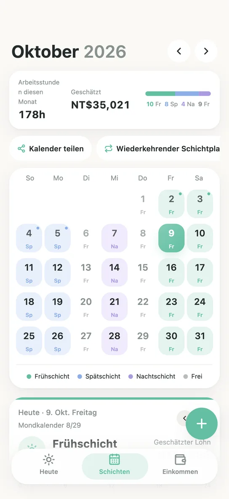

Schichtplan, Arbeitszeit und Lohn im Blick.
Plane Wechsel- und Nachtschichten, erfasse deine Arbeitszeit samt Pausen und schätze deinen Lohn. Sieh die Schichten mehrerer Jobs in einem Kalender.
Im App Store ladenKostenlos für iPhone und iPad. Pro ist optional.

Dienstplan für wechselnde Schichten
Plane Früh-, Spät- und Nachtschichten mit eigenen Zeiten und Farben. Wiederhole Schichtfolgen und behalte mehrere Jobs in einem Kalender im Blick.
Tatsächliche Arbeitszeit erfassen
Notiere Arbeitsbeginn, Feierabend, unbezahlte Pausen und Zuschläge. Hinterlege Notizen, Fotos und Aufgaben bei der passenden Schicht.
Voraussichtlichen Lohn prüfen
Schätze den Lohn pro Abrechnungszeitraum anhand deiner Regeln. Halte fest, was tatsächlich ausgezahlt wurde.
Schichtplanung, Zeiterfassung und Lohnschätzung funktionieren ohne Konto. Pro bietet Erinnerungen, Exporte und Backups.
Im App Store laden